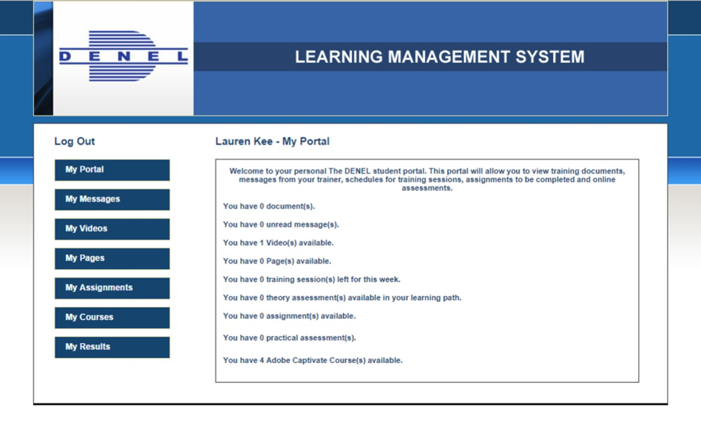

Projects
Fire Detection & localization using surveillance camera

A Machine Learning based model which is trained with dataset to detect fire and smoke using surveillance camera. This system can identify the onset of a fire within seconds, providing instant alerts to emergency responders. Tools: Python, RoboFlow, PyTorch for training the YOLO model, OpenCV for handling video input and processing frames from the surveillance camera.
Denel LMS Application: Empowering Lifelong Learning
Managed a portal that serves as the gateway to all of the LMS's functionalities, such as course catalogs, progress tracking, reporting, and communication tools. This portal typically offer features such as gradebooks, attendance tracking, and discussion forms that facilitate student-teacher interaction. Tools:HTML, CSS, JavaScript used for frontend, PHP used for Backend, XAMPP MySQL used as Database.